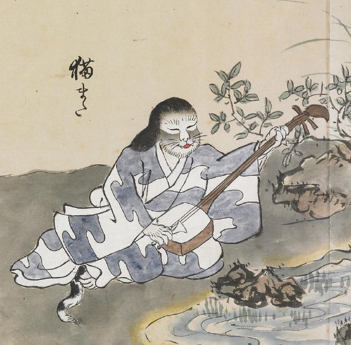

猫又；ネコマタ，猫；ネコ

三味線を弾いている猫の化物。長い髪が生えている。着物の裾から尻尾が見えている。
著作者：北斎季親／出典：親書誌：U426_nichibunken_0052：化物尽絵巻；バケモノヅクシエマキ／日付：2007／資源識別子：U426_nichibunken_0052_0015_0000
Copyright (c)2010- International Research Center for Japanese Studies, Kyoto, Japan. All rights reserved.